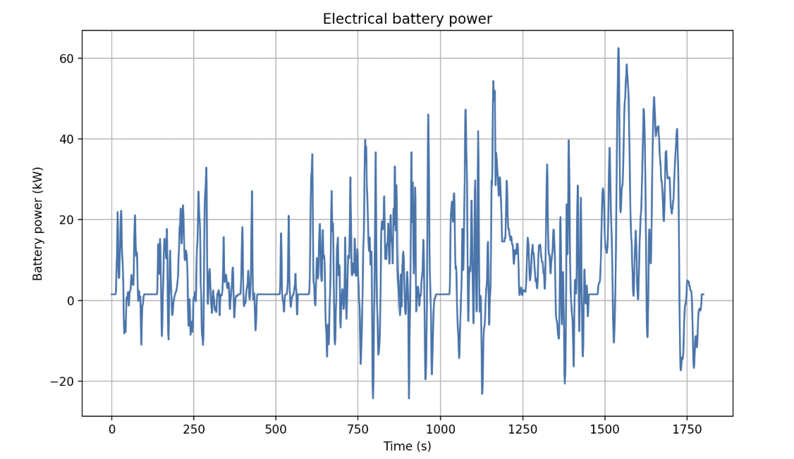
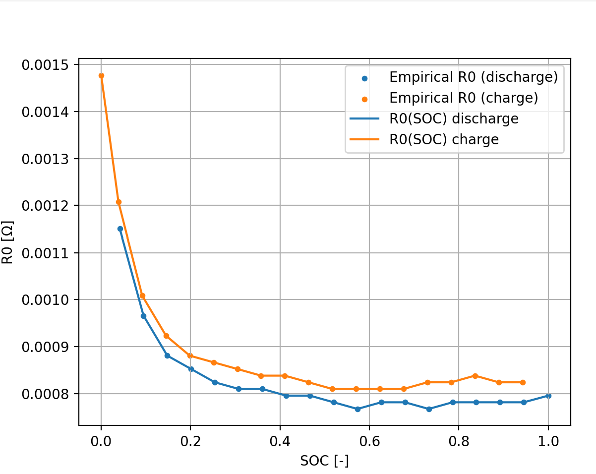
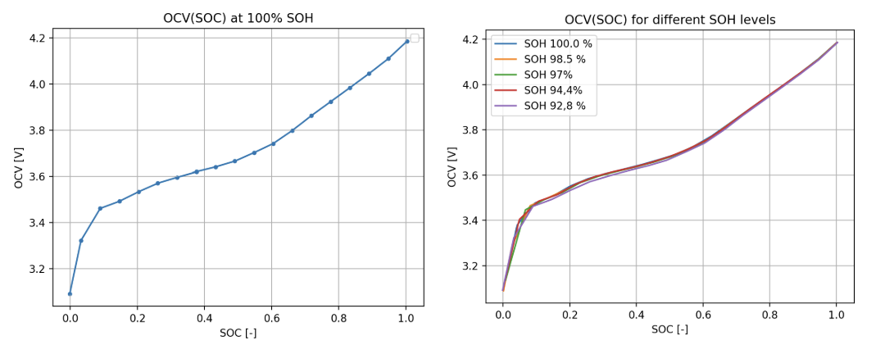
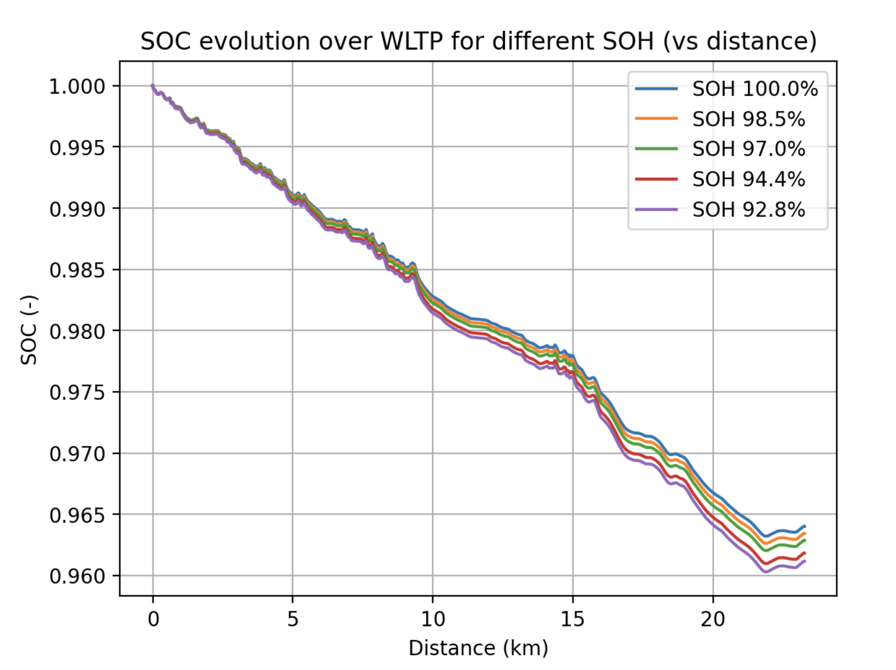

Data and Modelling Weeks · EDF R&D
How far can a car go, starting from one cell on a lab bench?
A pulse test on a single lithium-ion cell gives you a voltage drop and a capacity. Turning that into a number of kilometres takes three models stacked on top of each other — and the interesting part is where the error ends up.
- Context
- Data and Modelling Weeks
CentraleSupélec - Partner
- EDF R&D
- Reference vehicle
- Tesla Model S
WLTP Class 3 cycle - Stack
- Python, NumPy,
SciPy, Matplotlib
The chain
A longitudinal vehicle model turns a standardized speed profile into an electrical power demand. An equivalent circuit model, identified from laboratory pulse tests, turns that demand into a cell current. Coulomb counting turns the current into a state of charge, and the number of cycles needed to empty the pack gives the range.
Because the cell parameters can be re-identified at different states of health, the same pipeline also answers a second question: how much range does the battery lose as it ages?
Predicted for a fresh pack, against 744 km announced by the manufacturer — an 8.5 % underestimate from a deliberately simple model.
What the vehicle asks of the battery
Three forces resist the car: inertia, rolling resistance, and aerodynamic drag. Their sum times the speed is the mechanical power at the wheels.
The model was built in three passes rather than all at once: bare mechanics first, then drivetrain losses, then regenerative braking and auxiliary loads. The final form is piecewise, because pushing the car and recovering energy from it do not share an efficiency.
Braking is assumed to be handled entirely by the electric machine. That holds here because the WLTP cycle only contains smooth decelerations, where friction brakes barely intervene on a modern EV.

What the cell can give
Each cell is a voltage source in series with a single resistance, both depending on the state of charge. Simple to the point of being crude, and chosen for that: few parameters, all of them identifiable from a pulse test.
After a current step, the terminal voltage drops instantly before slower transients appear. Diffusion cannot react that fast, so that first drop belongs entirely to the ohmic resistance:


That second observation matters more than it looks. Ageing changes capacity and resistance, but not the equilibrium voltage — which tells you which two quantities to track over a battery's life, and which one you can leave alone.
Joining the two
The vehicle model gives a power, the circuit model gives a voltage. The link between them is quadratic in the current, solved at every time step:
The positive root, necessarily. The negative one would return a discharge current whatever the sign of the requested power, which is meaningless.
Sizing the pack
Two independent constraints, each fixing one dimension. Voltage sets how many cells go in series: a 400 V architecture with cells swinging between 3.1 and 4.2 V gives 110. Energy sets how many strings go in parallel: 95 kWh of usable energy at roughly 222 Wh per cell needs about 428 cells, so 4 strings.
The result is checked under peak load. At the lowest pack voltage and worst-case resistance, the drop is around 7.5 V on a 400 V pack — negligible — and 45 A per cell, comfortably inside the range the characterization tests covered. The configuration holds.
| Series | 110 cells |
|---|---|
| Parallel | 4 strings |
| Total | 440 cells, ≈ 97.7 kWh |
Ageing
| State of health | 100 % | 98.5 % | 97.0 % | 94.4 % | 92.8 % |
|---|---|---|---|---|---|
| Range | 681 km | 669 | 660 | 643 | 630 |

Where the error actually is
A one-at-a-time sensitivity analysis on every parameter gave a clear answer, and not the one I expected. The dominant term is not the battery model at all — it is auxiliary power, the constant draw of heating, lighting and electronics, which is independent of speed and therefore accumulates with time rather than distance. Traction efficiency comes second, since the battery power scales roughly as its inverse.
Two corrections illustrate the point. Modelled pack mass, at 1 kg per cell, is lighter than teardown estimates of the real vehicle; correcting for it brings the prediction to 702 km and the error to 5.6 %. Dropping auxiliary power to 500 W, plausible in mild weather, closes part of what remains.
The conclusion is worth stating plainly: the residual error sits in the vehicle-level assumptions, not in the cell model. Refining the battery further would have bought very little.
What it does not do
No polarization dynamics — a zeroth-order circuit cannot reproduce voltage relaxation, and it shows when the model is compared against a measured recovery curve. No temperature dependence, no cell-to-cell imbalance, no road slope, and constant efficiencies throughout. All deliberate: the framework is built for pack sizing and comparative range analysis, where transparency and a low parameter count are worth more than absolute accuracy.